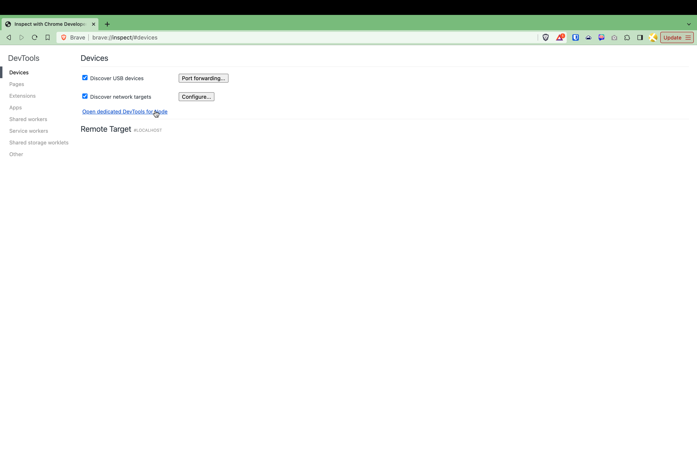

Heap Dump Analysis¶
There are a number of reason why one would want to do a heap dump but in particular, they are helpful for find memory intensive operations and leaks. There are two major types of heap dumps that are available to node developers. The first is a JavaScript heap dump, and the second is a native heap dump. The JS heap dump is much more common and is the default heap dump that is generated by node. It is useful when analyzing JS generated objects that are managed by the runtime. However there is one major limitation to the JS heap dump, and that is that it does not include native objects. This is where the native heap dump comes in handy. The native heap dump is a snapshot of the entire process memory, and includes objects that are allocated by C/C++ code, including native modules in use by the application. The limitation to the native heap dump is that it will not include any JS objects that are allocated by the V8 runtime. Those are generally created within mmap'ed pages and the native heap dump tools are specific to C objects that are created with malloc and destroyed via free. C++ is also covered as new and delete are wrappers around malloc and free. This is why it is important to understand how to analyze both types of memory usage.
JavaScript Heap Dump¶
Node has built in V8 heap dump access and its a very powerful tool for analyzing memory usage. Understanding how the dump is created will both help to understand how it is displayed and how to use the analysis more effectively.
The V8 heap dump is a stop the world process because walking the entire heap graph is necessary to create one. This is similar to a full, major garbage collection event. The VM starts at the heap entrance node and walks the entire graph and makes note of every edge that connects each node along the way. Nodes are JSObjects and edges are references between those objects.
By time the whole heap is walked the full size and values of all nodes are known and all of the connections between those nodes is well understood. The object that is returned is a set of three arrays, the nodes, the edges and the string values that are encountered (because strings are themselves arrays of characters in C so they are treated a bit differently by V8).
Creating a V8 heap dump¶
There are two functions for creating a heap dump but both call the same functionality under the hood. One streams the result, require("v8").getHeapSnapshot([options]), and is primarily intended for use by the Chrome devtools button to "take a snapshot". The second writes the heap dump to a file, require("v8").writeHeapSnapshot(filename[,options]).
The optional options argument, in both cases, is the same and contains two props.exposeInternals and exposeNumericValues to enrich the dump. In many cases its the application layer that one wants to debug so exposeInternals is not usually necessary. In V8 numbers are stored as 32bit integers and the size of pointers is also 32bits. So as an optimization, the pointer to the numeric value can be eliminated and the value itself can be stored in the Address of the Value instead. exposeNumericValues transcribes those "pointers" to the actual numeric value and appends them to the dump.
Because heap analysis happens frequently during Lodestar development there is a helper api endpoint to capture a heap dump. It is IMPORTANT that this endpoint is not public facing as it will open the threat of DDOS attack.
The endpoint accepts a POST request and you may include an optional dirpath query parameter to specify the directory where the heap dump will be written. If the dirpath is not specified then the heap dump will be written to the current working directory.
To create a Lodestar heap dump you can use the following command:
curl -X POST http://localhost:9596/eth/v1/lodestar/write_heapdump?dirpath=/some/directory/path
Viewing a V8 heap dump¶
It is best to analyze on a local development machine so if Lodestar is running on a cloud instance download the dump to the local environment. Open Chrome, or any Chromium based browser (the example photos were taken using Brave). In the url bar type chrome:://inspect to bring up the DevTools menu (in brave the url will be rewritten to brave://inspect).

Click on the Open dedicated DevTools for Node link to open the node specific window and click on the Memory tab as shown below.

Load the profile by either right clicking on the left pane or by clicking the Load button at the bottom.

Analyzing a V8 heap dump¶
Analysis is as much an art as it is a science and the best way to learn is to do it a few times. Generally the goal is looking for memory leaks but reducing memory overhead is also something that happens. This guide will focus on leaks. With memory leaks one is looking for why objects have references that prevent them from being garbage collected.
To spot sources of leaks, focus on objects that have large quantities or very large retained size. Retained size is the amount of memory that would be freed if the object was garbage collected. As an example if there is an object that has lots and lots of instances, like 100,000, and they are all pushed into an array then the array will have a very large retained size. This is because the array is holding references to all of the objects that it contains.
If it is not immediately apparent what objects are being leaked then another tool in your arsenal will be to take a second snapshot and compare it to the first. This will show what objects have been created/changed since the first snapshot.
If there is an object that has a large retained size but is roughly the same, but not exactly the same, changes are that is NOT the leak. Some objects can get quite large during runtime but if its roughly the same size over time, but not exactly the same, it means that the application is modifying the object (why its not exactly identical in size) but if it hasn't grown significantly over time it can be assumed it is probably the working size of the instances.
Try to focus on objects that are growing in size or in number over time. Growing in size means the object is holding references to other objects and growing in number means a function closure somewhere is retaining the small instances.
That is the science part, but these clues are just breadcrumbs to follow. In order to actually resolve the leak, one needs to go into the code to figure out where those objects are being created, or more often, why the references to them are being retained. This is where the art comes in.
Having a good understanding of the codebase will help to narrow down where to look. It is also common that the leak is not coming directly from Lodestar code, but rather one of the dependencies so be careful not to rule those out.
Native Heap Dump¶
note: collecting a native heap dump is only supported on linux, analysis can be done from linux or Mac
There are several tools that can be used to do native heap dump analysis. The most common are massif from the Valgrind suite, google's gperftools and heaptrack from KDE. Of the three, heaptrack is the most user friendly tool, and it is specifically designed for the task. It is much faster than Valgrind, easier to integrate than gperftools and also includes a gui for result analysis. Often times there are also memory allocations that are not related to memory leaks, and tools like Valgrind and gperftools become less useful. This is why heaptrack is the recommended tool for heap dump analysis on Lodestar.
There are a few things that will make the results with heaptrack far better. The most important is using debug builds of all libraries included in a binary, including the application itself. This will make the results usable. Not to say that they will be useless without debug symbols but it will be kinda tough to optimize functions without knowing the function names nor the file and line numbers.
This is the heart of what heaptrack will do for us. It hooks into the memory allocation and adds in stack traces for each malloc call site. That way every time memory is reserved there is a way to track back where it happened in the code. heaptrack also hooks into the free function and checks that versus the allocations to check for memory leaks and for temporary variables that can be optimized. This also allows for optimization of how many of each object is created by identifying high frequency allocations.
Generally the .heapdump file will be created on a cloud server and then copied to a local machine for analysis, mostly because the gui is not available through ssh. The gui is not required for analysis but it is much easier to use than the command line tools. The first step will be to install heaptrack on the target server and to capture a profile.
Build collection tools¶
Assume the following directory structure:
├── beacon-node
│ ├── db
│ ├── logs
│ ├── start-lodestar.sh
│ └── rc-config.yml
├── lodestar
└── node # step below will clone this repo
We will start from the directory that contains lodestar and the beacon-node files.
# Install heaptrack
$ sudo apt-get update
$ sudo apt-get -y install heaptrack
# Using a debug build of node is recommended and it can be build
# from source. Clone the node repo to get started.
$ git clone https://github.com/nodejs/node.git
$ cd node
# Use whichever version of node you prefer
$ git checkout v20.10.0
$ ./configure --debug
# This command only builds the debug version of node and assumes
# that a release version of node is already installed on the system
$ make -C out BUILDTYPE=Debug -j$(nproc --all)
# Move the debug version of node the the same folder that the release
# version is installed in and name it `node_debug`. This will put the
# debug binary on the path and allow you to run it with the
# `node_debug` command
$ cp out/Debug/node "$(which node)_debug"
$ which node_debug
/your/home/directory/.nvm/versions/node/v20.10.0/bin/node_debug
# Return to the lodestar repo
$ cd ../lodestar
# Clean the build artifacts and node_modules
$ yarn clean && yarn clean:nm
# Install the dependencies
$ yarn install
# Ensure that all native modules are rebuilt with debug symbols. Some
# modules are prebuilt, like classic-level, and the debug symbols may
# not be included. If the the debugging exercise is focussed around
# one of these dependencies, then you will need to manually clone those
# repos and manually build them with debug symbols.
$ npm rebuild --debug
Collect a heap dump¶
# Move to th `beacon-node` directory
$ cd ../beacon-node
# Start lodestar with profiling enabled
$ heaptrack \
$ --output ./lodestar.heapdump \
$ node_debug \
$ --max-old-space-size=8192 \
$ ../lodestar/packages/cli/bin/lodestar.js \
$ beacon \
$ --rcConfig ./rc-config.yml \
$ > /dev/null 2>&1 &
# Wait some period of time for the heap dump data to be collected
# The data will not be persisted until the process is stopped. You can gracefully
# stop the process with the following command and if you want to hard kill it
# add `-9` to the end of the `kill` command although that should not be necessary
$ ps aux | grep lodestar | grep -v grep | awk '{print $2}' | head -n 1 | xargs kill
Collecting a heap dump on a running process¶
Collecting a heap dump can also be done on a running process. There are both advantages and disadvantages to this approach. The main advantage is that you can collect a heap dump without having to restart. The down side is that the dump will only include allocations/de-allocations while the tracker is running. This means that all the non-paired calls to malloc/free will register as leaks. It will also not give a true representation of how the heap is being used. On the upside, however the dump will be much smaller in size.
It is important to note a warning that is in the heaptrack source code:
WARNING: Runtime-attaching heaptrack is UNSTABLE and can lead to CRASHES in your application, especially after you detach heaptrack again. You are hereby warned, use it at your own risk!
# Move to th `beacon-node` directory
$ cd ../beacon-node
# Start lodestar
$ node_debug \
$ --max-old-space-size=8192 \
$ ../lodestar/packages/cli/bin/lodestar.js \
$ beacon \
$ --rcConfig ./rc-config.yml \
$ > /dev/null 2>&1 &
# Wait some period of time to start collecting the dump
# GDB is required to inject heaptrack into a running process
# so you may need to install it
$ sudo apt-get update
$ sudo apt-get install -y gdb
# Elevated `perf` permissions are also required depending on your
# system configuration. Change until the next reboot
$ echo 0 | sudo tee /proc/sys/kernel/yama/ptrace_scope
# Get the pid of the lodestar process
$ export LODESTAR_PID=$(ps aux | grep lodestar | grep -v grep | awk '{print $2}' | head -n 1)
# Inject heaptrack into the running process
$ heaptrack --pid $LODESTAR_PID
heaptrack output will be written to "/home/user/beacon-node/heaptrack.node_debug.111868.zst"
/usr/lib/heaptrack/libheaptrack_preload.so
injecting heaptrack into application via GDB, this might take some time...
injection finished
# Wait some period of time to collect the heap dump. See below
# for the termination command that can be run from a separate
# terminal when ready to stop collecting data
Terminated
removing heaptrack injection via GDB, this might take some time...
Heaptrack finished! Now run the following to investigate the data:
heaptrack --analyze "/home/user/beacon-node/heaptrack.node_debug.111868.zst"
There is a trap in heaptrack but the process uses a nested shell to do the actual injection so it is not possible to just Ctrl+C out of the injected process without corrupting the output file. To properly kill the collection one needs to target the nested shell pid. Here is a helper command to target that process:
ps -ef | grep '[h]eaptrack --pid' | awk '$3 == '$(ps -ef | grep '[h]eaptrack --pid' | awk '$3 != 1 {print $2}' | head -n 1)' {print $2}' | xargs -r kill
After working with the injected process for a while, I cannot honestly recommend it. It can work in a pinch, and is best suited for when the profiled process can be exited gracefully without repercussions (not on mainnet for instance). The benefit, though, is that the heapdump will be much smaller and targeted to runtime (will not have the transient, startup allocations) which can make it easier to see what is happening.
Installing heaptrack-gui on Linux¶
# You can you apt, apt-get or aptitude to install the gui
$ sudo apt-get update
$ sudo apt-get install -y heaptrack-gui
Installing heaptrack-gui on OSX¶
At the time of writing this there is no official pre-built binary for OSX. This was a bit of a challenge but it was WELL worth the effort as the tool works very well. There were a number of bugs along the way while "using the docs" so your mileage may vary, but this is what worked for me.
Most of the dependencies can be installed via Homebrew and the tool itself needs to be built from source. There was one dependency that needed to be built from source. This process assumes a working folder that the repos can be cloned into.
# Start in the root folder where the repos will be cloned
$ brew install qt@5
# prepare tap of kde-mac/kde
$ brew tap kde-mac/kde https://invent.kde.org/packaging/homebrew-kde.git
$ "$(brew --repo kde-mac/kde)/tools/do-caveats.sh"
# install the kde-mac and other required dependencies
$ brew install kde-mac/kde/kf5-kcoreaddons \
$ kde-mac/kde/kf5-kitemmodels \
$ kde-mac/kde/kf5-kconfigwidgets \
$ kde-mac/kde/kdiagram \
$ extra-cmake-modules \
$ ki18n \
$ threadweaver \
$ boost \
$ zstd \
$ gettext
# There is a bug in the current version of kde-mac/kde and one dependency needs
# to be built manually. This is the workaround to get it built.
$ git clone https://invent.kde.org/frameworks/kio.git
$ mkdir kio/build
$ cd kio/build
$ export CMAKE_PREFIX_PATH=$(brew --prefix qt@5)
$ cmake -G Ninja -DCMAKE_BUILD_TYPE=Release ..
$ ninja
$ sudo ninja install
$ cd ../..
# Now make sure that the dependencies are available to the system during runtime
$ ln -sfv "$(brew --prefix)/share/kf5" "$HOME/Library/Application Support"
$ ln -sfv "$(brew --prefix)/share/knotifications5" "$HOME/Library/Application Support"
$ ln -sfv "$(brew --prefix)/share/kservices5" "$HOME/Library/Application Support"
$ ln -sfv "$(brew --prefix)/share/kservicetypes5" "$HOME/Library/Application Support"
# We are now ready to build the heaptrack_gui binaries for analysis on OSX
$ git clone https://invent.kde.org/sdk/heaptrack.git
$ cd heaptrack
$ mkdir build
$ cd build
$ CMAKE_PREFIX_PATH=$(brew --prefix qt@5) PATH=$PATH:/opt/homebrew/opt/gettext/bin cmake ..
$ cmake -DCMAKE_BUILD_TYPE=Release ..
$ make heaptrack_gui
$ sudo make install
# You can now find heaptrack_gui with your gui Applications. It is default
# placed as /Applications/KDE/heaptrack_gui.app